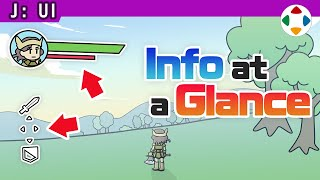
速览
画面上显示的信息称为 HUD（Head-Up Display，抬头显示），也简称 Info。HUD 原本用于战斗机等，靠半反射镜显示；近年汽车也广泛采用，不用移开视线、而且显示在远处，能更安全地获得信息。游戏里的 HUD 是贴在画面上的表示的总称；其实比起贴在画面上的东西，跟随角色的表示也许更像 HUD。个人感觉：日本作品信息多，海外作品克制，海外重视沉浸感，不想画面太闹，能随时关掉信息的游戏也不少；樱井则偏重功能、全部显示。有了方便、多了杂乱，各游戏都在摸索有效的表现，结果也各不相同。他的例子：《大乱斗X》起 HUD 显示斗士头像，弥补画面里斗士很小时的角色性，也适合观战；背景有纹样向上 UV 滚动，比实色或全透明更有「正在战斗、燃烧」的氛围；斗士与 HUD 重叠时变半透明；头上的 1P 光标总显示太吵，会按距离和状况隐现。《卡比赛车》获得复制能力时仪表样式会变，机体损坏时仪表也会被破坏；攻击/击败的对手以图标显示，因为 3D 空间里难以看出伤到了几个对手。《Meteos》（严格说在画面外）外星人的头会转，按下加速转速会提高，看着也开心。看看其他游戏会有很多发现，但前提是：HUD 要让游戏更好玩、更易玩。
1. 什么是 HUD 0:04
画面上显示的信息称为 HUD（Head-Up Display，抬头显示），也简称「Info」。
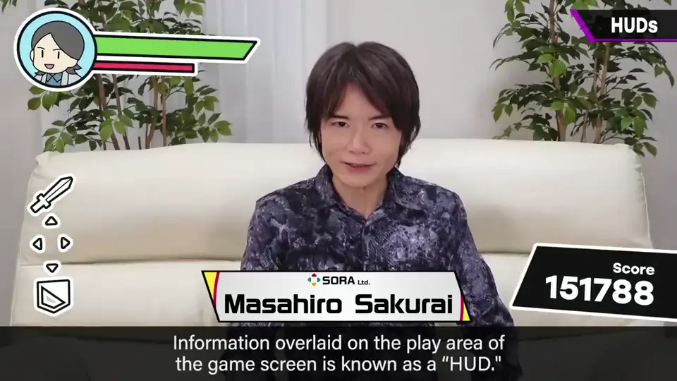
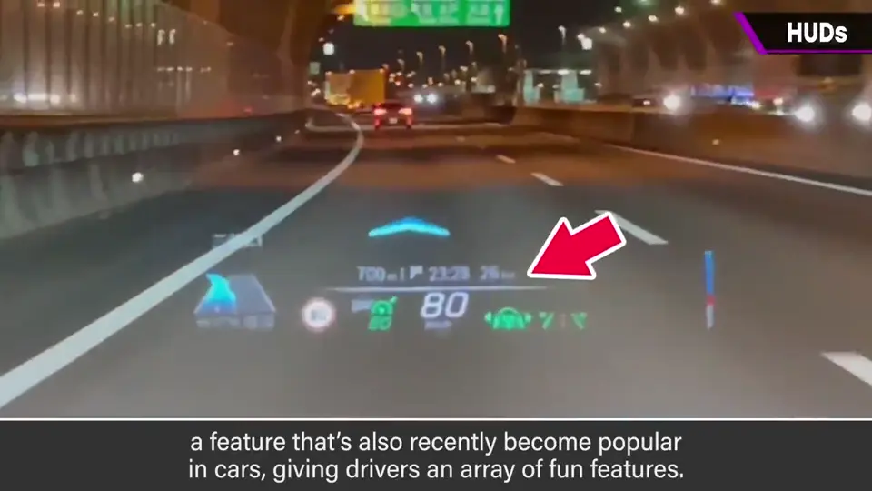
HUD 原本用于战斗机等，靠半反射镜显示；近年汽车也广泛采用，不必移开视线，而且看起来在远处，能更安全地获取信息。
2. 游戏中的 HUD 0:37
游戏中的 HUD，是贴在画面上的表示的总称——像这种画面就是这些部分。
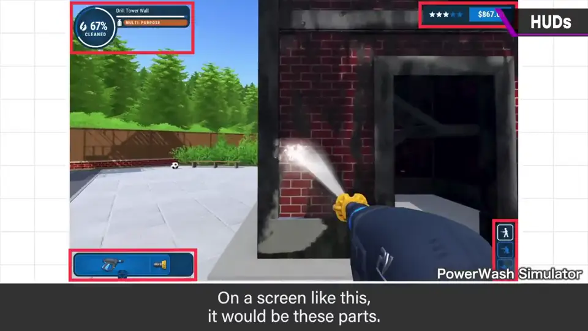
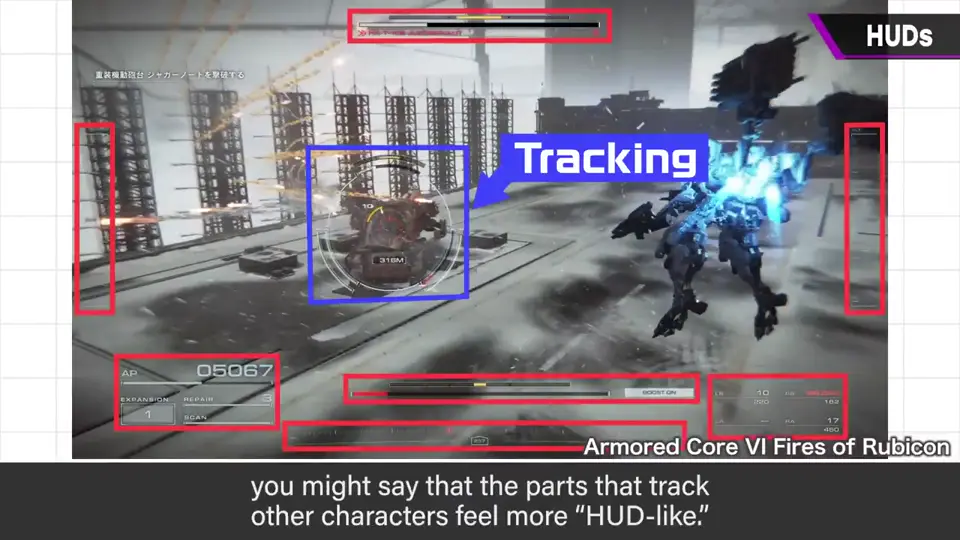
3. 日本 vs 海外的倾向 0:55
个人感觉的倾向：日本作品信息往往很多，海外作品多半克制。
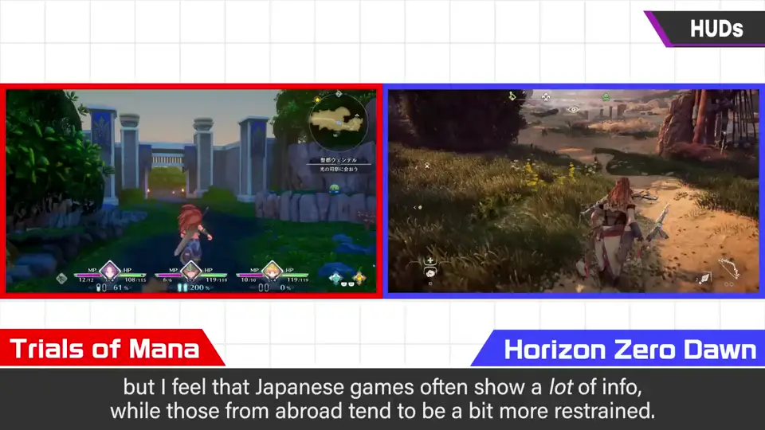
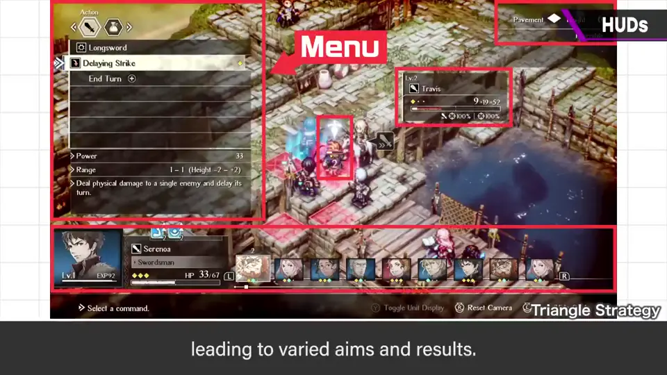
- 海外作品重视沉浸感，也许不想让画面太闹；能随时关闭信息的游戏也不少。
- 樱井偏重功能，会全部显示出来。
- 有了方便，多了又杂乱；各游戏都在摸索有效的表现，结果各不相同。
4. 《大乱斗》的 HUD 巧思 1:38
- 《大乱斗X》起 HUD 显示斗士的头像：画面中斗士往往很小，头像能强化角色性，也适合观战。
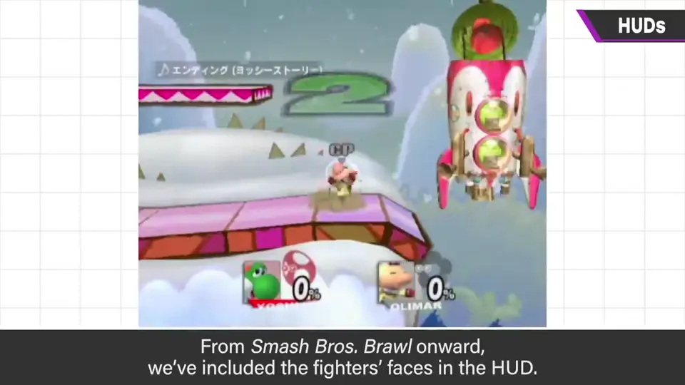
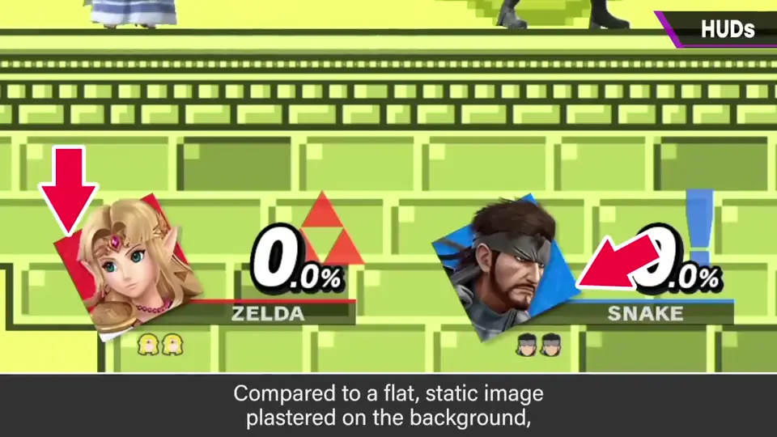
- 背景有纹样向上 UV 滚动：比实色或完全透明，更有「正在战斗、燃烧」的氛围。
- 斗士与 HUD 重叠时会变半透明。
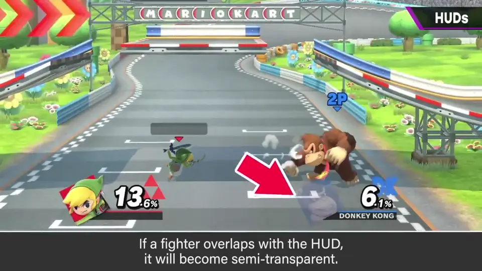
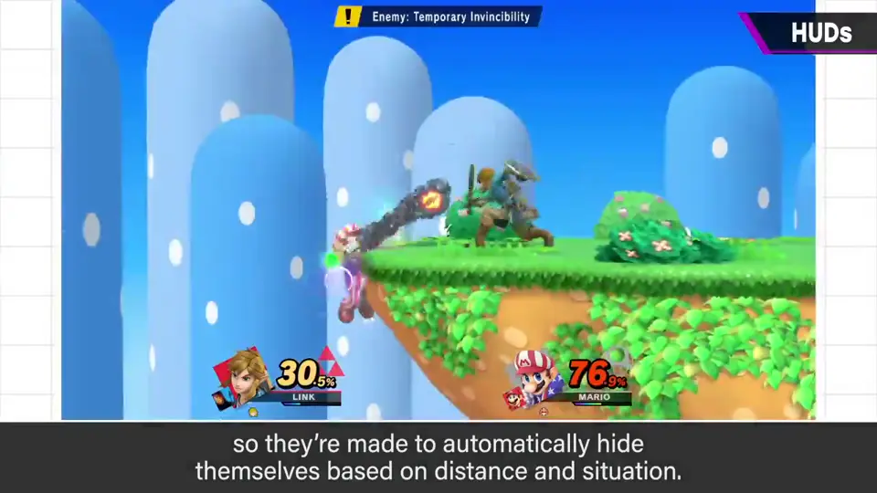
- 头上的 1P 光标一直显示会很吵，所以按距离和状况自动隐现。
5. 《卡比赛车》《Meteos》 2:14
《卡比赛车》获得复制能力时仪表样式会变；机体坏了，仪表也会被破坏。
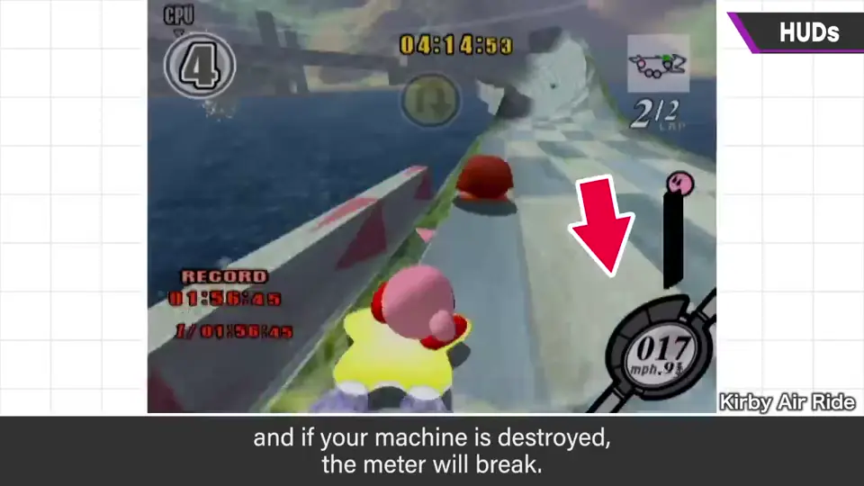
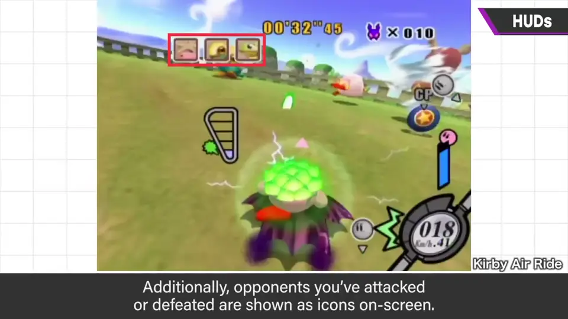
攻击过/击败的对手以图标显示：在 3D 空间中很难看出伤到了几个对手，这是有效的办法。
《Meteos》（严格说在画面外，不算 HUD）外星人的头会转动，按下加速后转速提高，看着有趣，也让加速更爽。
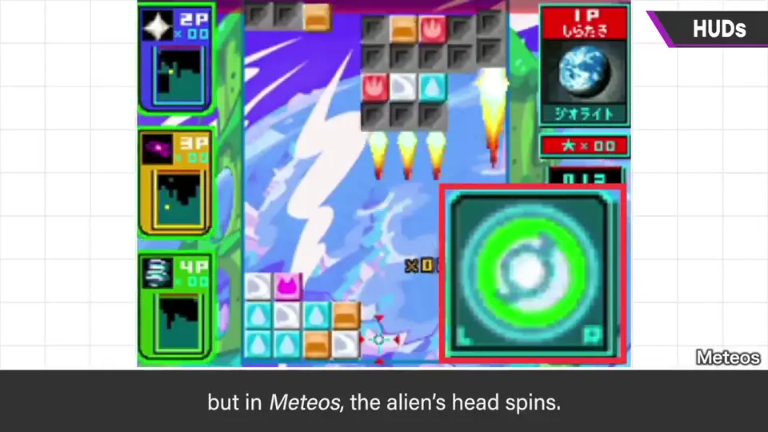
6. 前提：好玩、好用 2:58
自测题
1. 樱井认为日本与海外作品的 HUD 有什么倾向差异？
日本作品信息较多；海外作品较克制，重视沉浸，常可隐藏信息。 1:00
2. 《大乱斗X》起 HUD 显示斗士头像有什么好处？
画面中斗士常很小，头像能强化角色性，也适合观战者。 1:39
3. 《卡比赛车》为什么用图标显示击败的对手？
3D 空间中难以看出伤到了几个对手，图标能清楚传达。 2:33